Released on July 30, 2008
(Next Release on August 6, 2008)
Planning for the Future
The time of the year has come for heating oil customers to start planning for the winter ahead. Decisions about buying heating oil can be tough in any year, but with current high and unpredictable oil prices, the decision this year may involve considerably higher stakes for many family budgets already squeezed by broader economic and energy trends.
Record crude prices this year along with world distillate demand putting upward pressure on diesel and heating oil prices mean that the upcoming heating season could be the most expensive ever for heating oil customers. While U.S. supplies at the primary levels seem adequate, some heating oil dealers and consumers might delay pre-season tank fills as a result of the current high prices.
Fuel expenditures for individual households are highly dependent on weather conditions, the size and efficiency of individual homes and their heating equipment, and thermostat settings. While cross-fuel comparisons of average heating expenditures can be misleading because of differences in the extent to which each fuel is used in colder and milder areas of the country, the change in U.S. average projected expenditures relative to the prior winter for each heating fuel provides a broad guide to expected movements in heating costs. The Table below shows that, although all of the major heating fuels are expected to register sizable increases in total average expenditures, heating oil customers are likely to be particularly hard hit.
| Average U.S. Household Winter Heating Fuel Expenditures (Estimates are derived by simulation of the July 2008 Short-Term Energy Outlook.) | ||||
|---|---|---|---|---|
| Fuel | 2007-08 | 2008-09 | Change | |
| Heating Oil | $1,976 | $2,858 | $882 | (45%) |
| Natural Gas | 852 | 1,216 | 364 | (43%) |
| Propane | 1,673 | 2,116 | 443 | (26%) |
| Electricity | 852 | 929 | 77 | (9%) |
According to the July, 2008 Short Term Energy Outlook, during the upcoming winter season, refiner average crude oil costs are projected to be $136.75 per barrel compared to $87.55 per barrel during the last winter season. Their combined wholesale and retail margins are similar to those of the diesel fuel market, for which world-wide demand growth has contributed to the strengthening of those margins since last winter. Residential natural gas and electricity prices, on the other hand, are subject to regulations that determine the rate at which feedstock- and capital-cost changes are reflected in these prices. About half of propane production stems from relatively low-cost natural gas, which has helped propane prices remain below heating oil. Electricity is used as a space-heating fuel in warmer climates, where heating bills are lower.
For the winter as a whole, heating oil prices are expected to average $4.65 per gallon, compared to $3.28 per gallon last winter season. But many heating oil customers are expected to fill their tanks at the outset of the season in September and October. During that time, prices are projected to average $4.60 per gallon, compared to $2.80 per gallon during the same period last winter.
Weather in the Northeastern United States, the major heating oil market, in terms of heating degree days, is projected to be slightly warmer than normal but colder than last winter. Based on the last 75 years of weather data, the probability of a winter being at least 10 percent colder-than-average in heating degree days is 4.4 percent. Such a cold winter would require an average 62 gallons of fuel for the average Northeast household using oil heat, adding $285 to the average heating-oil fuel bill, even with no change in unit retail prices. But a colder-than-average winter would also boost prices as well. The three sources of distillate -- domestic refinery production, imports, and inventories -- should be able to supply the heating fuel requirement under any weather scenario, assuming no unanticipated supply disruptions. Canada, Venezuela, and the U.S. Virgin Islands have been the traditional or baseline sources of imported heating oil, and Europe has historically provided incremental supplies to offset surges in heating oil demand during unexpected cold snaps. Exacerbating the problem of tight European inventories is the seasonal uptick in demand for heating oil in Asia, where consumption of diesel has grown substantially for both power-generation and transportation uses.
It is likely that the other two sources of heating oil -- domestic refinery output and inventories -- can make up for any shortfall in imports. The most recent Short-Term Energy Outlook projected total winter distillate refinery output averaging 4.14 million barrels per day, with an average refinery utilization rate of 84.9 percent and an average distillate yield of 27.3 percent, a record for a winter season.
During the past several years, refineries have been playing an increasing role in meeting unanticipated heating oil requirements. Current distillate yields are running at about 30 percent. Although distillate yields are unlikely to increase, the refinery utilization rate is currently below the winter-season record high of more than 90 percent, so the capacity remains to increase distillate production. Moreover, refinery capacity has grown by about 160,000 barrels per day since the beginning of the last winter season. If necessary, refinery distillate production could well exceed that projected in the Short-Term Energy Outlook. Also, end-of-season distillate stocks are projected to be 111 million barrels, 4 million barrels higher than at the end of the prior winter season and 7 million barrels above the low end of the "normal" range. As a result, stocks would be able to provide as much as an additional 40,000 barrels per day during the winter season and remain within the "normal" range.
But during this season, markets might be tighter than normal further down the distribution chain for several reasons. First, current high prices may discourage customers from locking in prices more than in past winter seasons in the hope that prices will recede. Some dealers might be reluctant to offer a fixed price for the season if prices remain high and volatile. Also, dealers, whose own credit lines may have been reduced or eliminated during the current credit crunch, might not be able to extend credit to their customers who would otherwise be willing to purchase heating oil during the summer months. Customers and dealers alike may also choose to defer purchases until after the beginning of the heating season in the hope that the trend towards lower prices over the past several weeks will continue. The resulting scramble after the onset of the heating season could result in temporary spot shortages and higher prices if the weather turns unexpectedly cold.
In summary, while primary supplies of heating oil appear adequate for either a normal or colder-than-normal winter season, the size of projected increases in expenditures combined with tightness in credit markets for both dealers and consumers are contributing to a very challenging market environment for heating oil users.
Gasoline Price Falls Below $4 a Gallon
The U.S. average retail price for regular gasoline continued to slip below its all-time high set July 7, weakening an additional 10.9 cents to 395.5 cents per gallon this week. This was the third consecutive week in which the U.S. average decreased and the first time in eight weeks that the average price fell below $4 a gallon. On the East Coast, the price dropped 8.4 cents to 396.0 cents per gallon. For the second week in a row, the price in the Midwest went down more than in any other region, plummeting 15.4 cents to 382.7 cents per gallon; it is now the lowest of any region. The Gulf Coast price declined 8.5 cents to 385.7 cents per gallon. The price in the Rocky Mountain region decreased the least of any region, falling 4.5 cents to 406.0 cents per gallon. The West Coast price moved 11.8 cents lower to 424.5 cents per gallon. The average in California dropped 14.3 cents to 431.7 cents per gallon.
For the second week in a row, retail diesel prices tumbled in all regions of the country. The U.S. average price dropped to 460.3 cents per gallon, a decline of 11.5 cents. Nonetheless, the price was 171.7 cents higher than a year ago. The average price on the East Coast fell 10.9 cents to 466.4 cents per gallon. The price in the Midwest remained the lowest of any region at 451.8 cents per gallon following a plunge of 13.1 cents. The average price in the Gulf Coast also plummeted 13.1 cents, to 457.0 cents per gallon. In the Rocky Mountains, the price of 465.7 cents per gallon reflects a fall of 5.7 cents, the smallest decline of any region. On the West Coast, the average price decreased 7.9 cents to 476.6 cents per gallon. In California, the average price was 486.9 cents per gallon, a drop of 9.5 cents.
Weak Propane Build Continues
The buildup of the Nation’s primary supply of propane continued weak with a reported 0.5 million barrels added to inventories last week. Consequently, as of July 25, 2008, propane inventories stood at an estimated 45.8 million barrels, a level more than 4 million barrels below the same year-ago period. The lackluster build over the last several weeks is being attributed to a recent surge in petrochemical demand for natural gas liquids, particularly for propane, as indicated by industry observers. Weekly gains were reported in the Midwest and the combined Rocky Mountain/West Coast region, up 0.6 million barrels and 0.2 million barrels, respectively. However, East Coast inventories dropped last week by 0.1 million barrels while Gulf Coast inventories fell by 0.3 million barrels during this same time. Propylene non-fuel use inventories moved higher by 0.1 million barrels to account for a 6.0 percent share of total propane/propylene inventories, compared with the prior week’s 5.8 percent share.
Text from the previous editions of “This Week In Petroleum” is now accessible through a link at the top right-hand corner of this page.
| Retail Prices (Cents Per Gallon) | |||||||
| 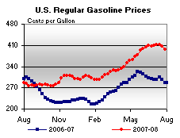 | 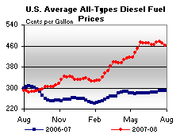 | ||||||
| Retail Data | Changes From | Retail Data | Changes From | ||||
| 07/28/08 | Week | Year | 07/28/08 | Week | Year | ||
| Gasoline | 395.5 | Diesel Fuel | 460.3 | ||||
| Spot Prices (Cents Per Gallon*) | |||||||||||||||||||||||||||||||||||
| 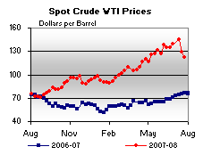 | 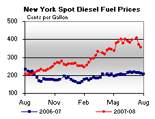 | ||||||||||||||||||||||||||||||||||
| 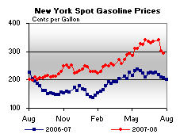 | 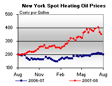 | ||||||||||||||||||||||||||||||||||
|
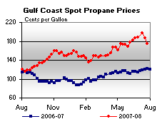 | ||||||||||||||||||||||||||||||||||
| *Note: Crude Oil WTI Price in Dollars per Barrel. | |||||||||||||||||||||||||||||||||||
| Stocks (Million Barrels) | |||||||
| 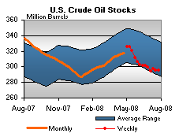 | 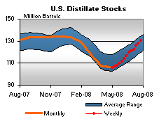 | ||||||
| 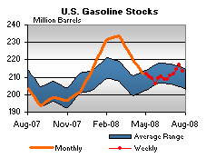 | 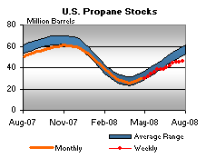 | ||||||
| Stocks Data | Changes From | Stocks Data | Changes From | ||||
| 07/25/08 | Week | Year | 07/25/08 | Week | Year | ||
| Crude Oil | 295.2 | Distillate | 130.5 | ||||
| Gasoline | 213.6 | Propane | 45.769 | ||||